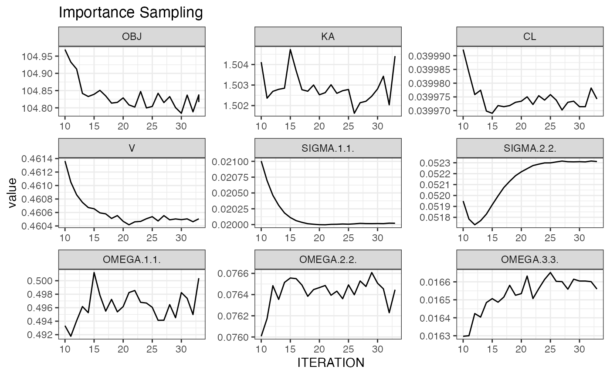
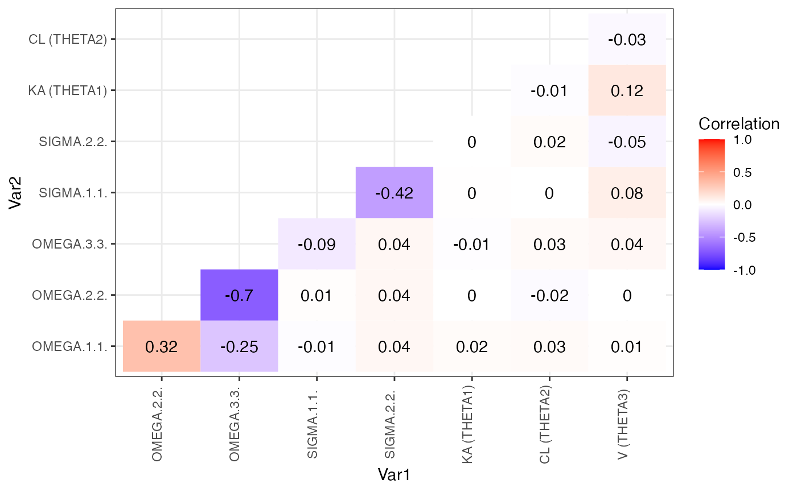

NMproject’s initial outing (the “alpha” interface) was developed in AZ and internally had 83% voluntary user retention (“user” = someone with 5+ separate model development workflows) across 100s of analyses in all TAs. It was a prototype R package produced to demonstrate the concept of industrialising pharmacometric analyses via script based model development. Key benefits included:
script-based model development workflows being used as the primary location to record modeller thoughts/notes/decisions alongside reproducible, re-executable code
a code library to encourage standardisation and sharing of best coding practices
compatibility with PsN and Pirana
installable in a wide variety of infrastructures in multiple organisations, from standalone windows installations to large unix based clusters
This is the new “beta” interface. A completely redesigned syntax that address several shortcoming of the previous syntax and expands functionality. Why the redesign?
(New)End-to-end model development workflows/notebooks for people who want 100% control over their model files. The new interface is the only NONMEM interface (known to the author) that can record and replay manual edits to files (seemlessly) for 100% flexibility without breaking the end-to-end reproducibility.
(New)R Functions to automatically fill $INPUT, $DATA, $THETA,… elements as well as various other routine model file manipulations
(New)Import code library templates (via a shiny interface) and get to a working NONMEM model quickly and entirely within R. See demo.
(New)NMproject is the only R package (known to the author) with a vectorised model object allowing groups of models to be operated on using the same syntax as a single model.
(New)Custom NMproject implementations of bootstrap, cross-validation, PPCs, stepwise covariate selection, and simulation-re-estimation. All controllable on granular level using vectorised model objects.
Diagnostics and VPCs using your favourite packages (e.g., ‘xpose’, ‘vpc’, …)
(New)RStudio ‘Addins’ to streamline user experience.
Monitor runs via shiny app including interactive OFV vs iteration plots for convergence assessment.
Optional customisable analysis directory structure for consistent code organisation
(New)R markdown friendly. Pipe friendly
NMproject has been used to conduct exploratory analyses and submission work. Model based power calculations were performed with NMproject in collaboration with biostatistics to demonstrate feasibility, design (sample size and dose), and to plan interim decision points of a recently published oncology dose finding study using pharmacometric endpoints: video presentation
NMproject targetted towards mid to upper level R users. If you know what a pipe is, what Knitr is, you should be good. NMproject does not hide NONMEM from the user so users should be familiar with NONMEM coding. For advanced functionality, knowledge of dplyr will help to create complex workflows.
The easiest way to familiarise your with NMproject is to run through the demo scripts line by line. Here’s a short YouTube video on running the demo
Run the following in the new R session:
This will population the Scripts directory with scripts, and deposit the Theopp dataset into the SourceData subdirectory.
The scripts are numbered s01.....Rmd, s02....Rmd etc., and are designed to be read and run in order. The scripts can also be used as template for your own model development
It is recommended to work in structured. Create a new analysis project via the RStudio menu items: FILE -> New Project -> New Directory -> New NMproject. The underlying function being used to create this analysis project is nm_create_analysis_project(). See documentation for detailed information including how to modify the structure to suit your preferences.
Follow through the instructions, you’ll be asked for a location, a name and whether you want to use renv to manage project library directories. See renv documentation for more information.
Once created you’ll see a clean analysis directory with empty subfolders.
Default the subdirectories for model development (these can be modified - see nm_create_analysis_project() documentation):
SourceData : intended for unmodified source datasets entering the analysis project
DerivedData : intended for cleaned and processed NONMEM ready datasets
Scripts : intended for all R scripts
Models : intended for all NONMEM modelling
Results : intended as default location for run diagnostics, plots and tables
There is nothing mandating the use of R markdown in NMproject. You can use scripts. However R markdown documents produce nice shareable model development logs which provide a readable description of what steps were performed and in what order.
It is advisable to always start from a template. Templates can be accessed in File -> New File -> R markdown... -> From Template. Two to get started with are NMproject generic which we’ll use as a generic template for data processing and cleaning and model development for our model development notebook.
Your first script in performing an analysis will probably be a dataset assembly or dataset cleaning. It’s easiest to start with the generic NMproject generic R markdown template.
The intent of the SourceData directory is to serve as an entry point of raw or externally produced dataset into your analysis directory.
It is best practice to use relative paths in your code where possible and to avoid using setwd() commands to change the working directory. E.g. to read a data set in the SourceData directory, use read.csv("SourceData/data.csv").
The write_derived_data() function can be used to save the NONMEM ready dataset into the DerivedData directory:
d %>% write_derived_data("DerivedData/data.csv")See the demo for how/why to create bootstrapped datasets before beginning model development.
It’s always best to start with NONMEM template too. Search the code library and bring into staging area of analysis project using the “code_library” RStudio ‘Addin’:
One of the templates is Models/ADVAN2.mod. Select it, preview it and then import by clicking the buttons and then closing the app.
The model will be in the staging area: staging/Models/ADVAN2.mod, not Models/ADVAN2.mod. Files in the staging area are not to be modified. It’s similar to the SourceData directory in that sense. This is to ensure that we can make changes to ADVAN2.mod in the code library without breaking old analyses that depended on it.
File -> New File -> New R markdown... -> From Template -> Model development will get you started with a model development log file.
The core nm object is created via the new_nm(). Subsequent child objects are created via the child() function. All interactions with NONMEM occur through the this object. It contains metadata about the NONMEM run and contain the contents of what will written as the control file (also called model file).
NONMEM control files are only written to the Models sub-directory just before running NONMEM via the run_nm() command
Let’s create our first NONMEM object with new_nm(). This will be a parent run to all other runs and thus requires more set up than other runs. Subsequent child objects created with child() will inherits characteristics of the parent.
Three arguments are required to create the parent, a run identifier, run_id, a control file it’s based on, based_on, and a (relative) dataset path data_path:
m1 <- new_nm(run_id = "m1",
based_on = "staging/Models/ADVAN2.mod",
data_path = "DerivedData/data.csv")
m1## List of 1
## $ execute.Models/m1
## ..$ type : chr "execute"
## ..$ run_id : chr "m1"
## ..$ run_in : chr "Models"
## ..$ executed : logi FALSE
## ..$ ctl_contents: chr collapsed - view with ctl_contents()
## ..$ ctl_orig : chr collapsed - view with ctl_orig()
## ..$ data_path : chr "DerivedData/data.csv"
## ..$ cmd : chr "execute runm1.mod -dir=m1"
## ..$ cores : int 1
## ..$ parafile : chr "path/to/parafile.pnm"
## ..$ run_dir : chr "m1"
## ..$ ctl_name : chr "runm1.mod"
## ..$ results_dir : chr "Results"
## ..$ unique_id : chr "execute.Models/m1"
## ..$ lst_path : chr "m1/NM_run1/psn.lst"
## ..- attr(*, "class")= chr [1:3] "nm_execute" "nm_generic" "list"
## - attr(*, "class")= chr [1:2] "nm_list" "list"Display the object by typing m1 in the console. Notice that the run_in field is point to Models. This can be changed by piping the function of the same name e.g.
m1 <- new_nm(run_id = "m1",
based_on = "staging/Models/ADVAN2.mod",
data_path = "DerivedData/data.csv") %>%
run_in("NONMEM/base_model")will run all models in a subdirectory of a subdirectory NONMEM/base_model/ instead (the $DATA (relative) path to the dataset will be automatically be updated to reflect the new location of the control file). Any field can by modified using a similar heuristic.
Piping is encouraged because it enables you to read the sequence of events in the order that they occur. Here we just have a single pipe, but you’ll see that we will frequently pipe longer chains of commands together. Each step is applying a transformation to the core nm object. The chain can be partially run in the console to see what each transformation is doing. The rest of this document is full of pipes so if you are unfamiliar with pipes, please consult the magrittr documentation.
To extract a field (rather than set a field) use the same function without additional arguments:
run_in(m1)## [1] "NONMEM/base_model"For now though, we’ll remove the last piped command and stay with the default run_in location.
NOTE: the field ctl_name refers to the name of the control that will be created. This will only be created when it the model is run with the run_nm() function (described later). For now, the control file contents reside inside the object. To view these you can use “show model/ctl file” RStudio ‘Addin’ , or text(m1).
A few automatic edits from the staged control file and a compact representation of these changes can be shown by highlighting the above code and selecting the “nm_diff” RStudio ‘Addin’ which show what has been changed.
Learning how to read to diffs will be an important skill in NMproject you will pick up over time. Notice how the $DATA has been updated to refer to the new location.
The default cmd() field of the object is execute {ctl_name} -dir={run_dir}. The braces are referred to as glue fields using the glue package. These refer to field names of the object that will be substituted in. For completeness on the next step we will explicitly set this to ensure our model development is easy to read.
m1 <- new_nm(run_id = "m1",
based_on = "staging/Models/ADVAN2.mod",
data_path = "DerivedData/data.csv") %>%
cmd("execute {ctl_name} -dir={run_dir}")The final steps to gets the NONMEM model ready is to fill in the remaining blanks in the template. They are the $INPUT and $THETA, $OMEGA. For this we will use the fill_input() and init_theta() and init_omega().
m1 <- new_nm(run_id = "m1",
based_on = "staging/Models/ADVAN2.mod",
data_path = "DerivedData/data.csv") %>%
cmd("execute {ctl_name} -dir={run_dir}") %>%
fill_input() %>%
init_theta(init = c(-2, 0.5, 1)) %>%
init_sigma(init = c(0.1, 0.1))Thus far, we have not executed NONMEM nor saved the control file to the file system. To execute, we simply pipe into the run_nm() function which will often form the last step of the chain and then run the command.
m1 <- new_nm(run_id = "m1",
based_on = "staging/Models/ADVAN2.mod",
data_path = "DerivedData/data.csv") %>%
cmd("execute {ctl_name} -dir={run_dir}") %>%
fill_input() %>%
init_theta(init = c(-2, 0.5, 1)) %>%
init_sigma(init = c(0.1, 0.1)) %>%
run_nm()PLACEHOLDER: YouTube video showing “nm_tran” RStudio ‘Addin’ in action.
In a cluster environment it is especially important to be able to diagnose data and control file issues before sending jobs off to the grid. Otherwise, you often need to wait minutes for errors that can be spotted immediately. It’s therefore highly recommended to make use of the “nm_tran” RStudio ‘Addin’. This will only run NMTRAN checks to find control file syntax errors and dataset errors. It will not run NONMEM itself. To use this ‘Addin’, highlight the above code and select the “nm_tran” RStudio ‘Addin’ near the top of the RStudio GUI.
Often there will not be the functions to do the control file manipulation you want. Although it is preferable to stick to automatic control file manipulation functions, you can do fully tracked manual edits via the “manual edit” RStudio ‘Addins’ menu. Again, just highlight the code, click the ‘Addin’ and follow the instructions:
NMproject contains several functions for automatic control file edits. We have already seen fill_input() and init_theta() etc. There are higher order functions which make multiple changes to your control stream, one of which is the subroutine(). If we already have a parent run m1 using ADVAN2 TRANS1, we can create a child() run that uses TRANS2 using:
View exactly what’s been changed by highlighting the above code in RStudio and clicking the "nm_diff RStudio ‘Addin’ to see what’s been changed before running. Here, changes will be in the $SUB, $PK and $THETA.
To add a covariate using PsN coding conventions use add_cov():
We saw a little at how the functions init_theta, init_omega and init_sigma can be used to set initial estimates earlier. The functions actually allow manipulation of initial estimates, parameter bounds, names, units, etc.
## display R representaton of $THETA
it <- m1 %>% init_theta() %>% dplyr::first()
it## name parameter lower init upper theta FIX unit trans line pos orig_line
## 2 KA THETA1 NA 0.5 NA 1 FALSE h-1 LOG 2 1 2
## 3 K THETA2 NA -2.5 NA 2 FALSE h-1 LOG 3 1 3
## 4 V THETA3 NA -0.5 NA 3 FALSE L LOG 4 1 4Note that the use of dplyr::first() is because init_theta returns a list of a data.frame and since we want to manipulate io, it’s easier if it’s a data.frame or tibble as then we can use R extensive data.frame manipulation functions. We use the same init_theta with the modified tibble to update the nm object like so:
## this is the slower method - only for illustration purposes
it$init <- c(0, 1, 2)
m1 <- m1 %>% init_theta(it)
m1 %>% dollar("THETA")## $`execute.Models/m1`
## 1| $THETA
## 2| 0 ; KA ; h-1 ; LOG
## 3| 1 ; K ; h-1 ; LOG
## 4| 2 ; V ; L ; LOGThis is quite inconvenient though as it requires 3 lines of R code. Knowing the columns of the ‘tibble’ though, we can manipulate values directly like so:
## Reset in one line to what we set it to earlier
m1 <- m1 %>% init_theta(init = c(-2, 0.5, 1))
m1 %>% dollar("THETA")## $`execute.Models/m1`
## 1| $THETA
## 2| -2 ; KA ; h-1 ; LOG
## 3| 0.5 ; K ; h-1 ; LOG
## 4| 1 ; V ; L ; LOG
## This however requires knowing the order of parameters
## here we supply a named vector in a different order
m1 <- m1 %>% init_theta(init = c(KA = -2, V = 1))
m1 %>% dollar("THETA")## $`execute.Models/m1`
## 1| $THETA
## 2| -2 ; KA ; h-1 ; LOG
## 3| 0.5 ; K ; h-1 ; LOG
## 4| 1 ; V ; L ; LOG
## can also manipulate other aspects (like the FIX column) similarly
m1 <- m1 %>% init_theta(init = c(KA = -2, V = 1),
FIX = c(KA = TRUE))
m1 %>% dollar("THETA")## $`execute.Models/m1`
## 1| $THETA
## 2| -2 FIX ; KA ; h-1 ; LOG
## 3| 0.5 ; K ; h-1 ; LOG
## 4| 1 ; V ; L ; LOGIt works similarly for $OMEGA and $SIGMA with init_omega and init_sigma, respectively.
To view all runs in the workspace and track progress:
shiny_nm()PLACEHOLDER: video showing shiny_nm()
Use markdown templates to create a customised set of diagnostics to reuse on multiple models. In the demo an example is shown in Scripts/basic_gof.Rmd, but ideally you’ll create your own customised version with everything you need to evaluate your model. To create an R markdown diagnostic template go to FILE -> New File -> R markdown -> From Template then select from one of the following:
model diagnostic
VPC diagnostic
PPC diagnostic
bootstrap results
PLACEHOLDER: short YouTube video of opening, customising, saving and running a template.
A template will appear in the script window for you to customise. Instructions are the at the top. Save the file (e.g. as Scripts/basic_gof.Rmd) and run in your log script with:
It will create the output in Results (or results_dir(m1))
Apply a fully editable goodness of fit R markdown template to both runs m2 and m3:
Note: c(m1, m3) is a vector object of 2 NONMEM runs. We’ll touch more on this later.
Evaluate and compare runs on the fly with the following commands
## parameter type unit trans nm_name Models/m2 Models/m2WT
## 1 KA THETA h-1 LOG THETA1 1.5 (21.7%) 1.5 (21.6%)
## 2 CL THETA h-1 LOG THETA2 0.04 (8.33%) 0.0398 (7.83%)
## 3 V THETA L LOG THETA3 0.461 (4.65%) 0.459 (4.66%)
## 11 TVCLWTlinear THETA <NA> THETA4 <NA> -0.0115 (0.00874)
## 4 IIV_KA OMEGAVAR CV% LOG OMEGA.1.1. 80.6 (21.2%) 80.5 (22.5%)
## 5 IIV_CL OMEGAVAR CV% LOG OMEGA.2.2. 28.2 (27.9%) 26.1 (34.9%)
## 6 IIV_V OMEGAVAR CV% LOG OMEGA.3.3. 12.9 (44.6%) 13 (44.5%)
## 7 prop error SIGMA SD <NA> SIGMA.1.1. 0.141 (10.3%) 0.134 (12.1%)
## 8 add error SIGMA SD <NA> SIGMA.2.2. 0.229 (20%) 0.264 (25.7%)
## 9 OBJ OBJ <NA> OBJ 104.823 102.719
## 10 CONDNUM CONDNUM <NA> CONDNUM 6.63 (0) 7.75 (0)
plot_iter(m2, skip = 10) ## skip first 10 interations 
covariance_plot(m2)
However these are better placed inside templates to enable rapid and consistent re-use.
Create simulation based diagnostics first by running a simulation using update_parameters() and convert_to_simulation(). Then use the ppc diagnostics and vpc diagnostics R markdown templates to generate customisable VPC and PPC diagnostics reports.
m2s <- m2 %>% child(run_id = "m2s") %>%
update_parameters(m2) %>%
convert_to_simulation(subpr = 50) %>%
run_nm()
m2s %>% nm_render("Scripts/basic_vpc.Rmd")
m2s %>% nm_render("Scripts/basic_ppc.Rmd")Don’t forget to comment your code with your decision making.
m1 %>% ls_tempfiles() ## will list all temporary files associate with run m1
## remove all temporary files associated with m1
m1 %>% ls_tempfiles() %>% unlink()
## Not specifying an argument will list temporary files of all runs
ls_tempfiles()Two fields parafile and cores when combined with a suitable cmd can enable runs to be executed in parallel using PsN.
The package rsample can be used to create bootstrap datasets in your initial data manipulation scripts. The following is an example bootstrap dataset being prepared with stratification on SEX and bodyweight WTC categorised in two categories
d <- d %>%
mutate(WT_C = cut(WT, breaks = 2, labels = FALSE),
STRATA = paste(SEX, WT_C, sep = "_"))
d_id <- d %>% distinct(ID, STRATA)
set.seed(123)
## create large set of resamples (to enable simulation to grow without ruining seed)
bootsplits <- rsample::bootstraps(d_id, 100, strata = "STRATA")
dir.create("DerivedData", showWarnings = FALSE)
bootsplits %>% saveRDS("DerivedData/bootsplit_data.csv.RData")In a model development script, the following, performs a 100 sample bootstrap of model m1
m1_boot <- m1 %>% make_boot_datasets(samples = 100, overwrite = TRUE)
m1_boot$m %>% run_nm()
## the following bootstrap template will wait for results to complete
m1_boot$m %>% nm_list_render("Scripts/basic_boot.Rmd")Results can be viewed in Results/basic_boot.m1.html.
The goal of NMproject’s covariate modelling functions is to provide a stepwise covariate method with manual decision making. This important to ensure that the full model selection/evaluation criteria (should be defined in statistical analysis plans) can be applied at every step rather than just log likelihood ratio testing, where the most significant model may be unstable, may worsen model predictions or may only be slightly more significant than a more physiologically plausible covariate relationship.
The functions test_relations(), covariate_step_tibble(), bind_covariate_results() together comprise NMproject stepwise covariate method with manual decision. The goal is to be part way between PsN’s SCM and completely manual process at each forward and backward elimination step. The syntax of how covariates are included is the same as PsN’s SCM routine - See PsN documentation for more information.
Relationships to tests are defined using the test_relations() function. Below we test BWT and AGE on all parameters in both linear and power fashion and all parameters are test with the categorical covariate SEX.
dtest <- test_relations(param = c("KA", "K", "V"),
cov = c("BWT", "AGE"),
state = c("linear", "power"),
continuous = TRUE)
dtest <- dtest %>% test_relations(param = c("KA", "K", "V"),
cov = "SEX",
state = "linear",
continuous = FALSE)
dtest## # A tibble: 15 × 4
## param cov state continuous
## <chr> <chr> <chr> <lgl>
## 1 KA BWT linear TRUE
## 2 K BWT linear TRUE
## 3 V BWT linear TRUE
## 4 KA AGE linear TRUE
## 5 K AGE linear TRUE
## 6 V AGE linear TRUE
## 7 KA BWT power TRUE
## 8 K BWT power TRUE
## 9 V BWT power TRUE
## 10 KA AGE power TRUE
## 11 K AGE power TRUE
## 12 V AGE power TRUE
## 13 KA SEX linear FALSE
## 14 K SEX linear FALSE
## 15 V SEX linear FALSEThe workflow for forward (and backward) steps then becomes
tibble of runs for the next step with covariate_step_tibble()
run_nm()
bind_covariate_results()
Here are steps 1-3 in action:
## create tibble of covariate step with model objects as column m
dsm1 <- m1 %>% covariate_step_tibble(
run_id = "m1_f1",
dtest = dtest,
direction = "forward"
)
## run all models greedily and wait for them to finish
dsm1$m %>% run_nm() %>% wait_finish()
## extract results and put into tibble
dsm1 <- dsm1 %>% bind_covariate_results()Here are steps 4-5: evaluate and select
## sort by BIC (for example) and view
dsm1 <- dsm1 %>% arrange(BIC)
## check condition number, covariance,...
## run diagnostic reports on the top three
dsm1$m[1:3] %>% nm_render("Scripts/basic_gof.Rmd")
## diagnostic reports will not be in "Results" like other runs
## to see the location, look at the "results_dir" field of the object
results_dir(dsm1$m[1:3])
## In this case we selec the first: dsm1$m[1]
m1_f1 <- dsm1$m[1] ## select most significant BICDo next forward step
dsm2 <- m1_f1 %>% covariate_step_tibble(
run_id = "m1_f2",
dtest = dtest,
direction = "forward"
)continue for as many steps as needed.
To modify initial estimates, we’ll use the mutate like behaviour of init_* functions. We will modify the init by referencing itself. We’ll modified all our fixed effects (log transformed) by 30%
m1 <- m1 %>% init_theta(init = rnorm(init, mean = init, sd = 0.3))
m1 %>% dollar("THETA")## $`execute.Models/m1`
## 1| $THETA
## 2| 1.024 ; KA ; h-1 ; LOG
## 3| -2.1535 ; K ; h-1 ; LOG
## 4| -0.52284 ; V ; L ; LOG
m1 <- m1 %>% init_omega(init = runif(init, min = init/2, max = init*2))
m1 %>% dollar("OMEGA")## $`execute.Models/m1`
## 1| $OMEGA
## 2| 0.18582 ; IIV_KA ; LOG
## 3| 0.10566 ; IIV_K ; LOG
## 4| 0.060302 ; IIV_V ; LOGWe can include and remove $OMEGA blocks with the functions block and unblock (to create $OMEGA BLOCKS for correlated random effects).
io <- m1 %>% init_omega() ## note we dont need dplyr::first as block()/unblock() also work on lists of tibbles.
io ## $`execute.Models/m1`
## name omega1 omega2 lower init upper block mblock FIX unit trans line
## 1 <NA> NA NA NA NA NA 1 NA FALSE <NA> <NA> 1
## 2 IIV_KA 1 1 NA 0.185820 NA 1 1 FALSE <NA> LOG 2
## 3 IIV_K 2 2 NA 0.105660 NA 2 1 FALSE <NA> LOG 3
## 4 IIV_V 3 3 NA 0.060302 NA 3 1 FALSE <NA> LOG 4
## pos orig_line orig_pos
## 1 1 1 1
## 2 1 2 1
## 3 1 3 1
## 4 1 4 1
io <- io %>% block(c(2,3)) ## make block out ETA 2 and 3
## put modified io wit
m1 <- m1 %>% init_omega(io)
m1 %>% dollar("OMEGA")## $`execute.Models/m1`
## 1| $OMEGA
## 2| 0.18582 ; IIV_KA ; LOG
## 3| $OMEGA BLOCK (2)
## 4| 0.10566 ; IIV_K ; LOG
## 5| 0.01 0.060302 ; IIV_V ; LOG
## for demo purposes we'll reverse the process with unblock()
io <- m1 %>% init_omega()
io <- io %>% unblock(c(2,3))
m1 <- m1 %>% init_omega(io)
m1 %>% dollar("OMEGA")## $`execute.Models/m1`
## 1| $OMEGA
## 2| 0.18582 ; IIV_KA ; LOG
## 3| 0.10566 ; IIV_K ; LOG
## 4| 0.060302 ; IIV_V ; LOGThe basic nm object is fully vectorised. To see this compare the following two outputs
m1## List of 1
## $ execute.Models/m1
## ..$ type : chr "execute"
## ..$ run_id : chr "m1"
## ..$ run_in : chr "Models"
## ..$ executed : logi TRUE
## ..$ ctl_contents: chr collapsed - view with ctl_contents()
## ..$ ctl_orig : chr collapsed - view with ctl_orig()
## ..$ data_path : chr "DerivedData/data.csv"
## ..$ cmd : chr "execute runm1.mod -dir=m1"
## ..$ cores : int 1
## ..$ parafile : chr "path/to/parafile.pnm"
## ..$ run_dir : chr "m1"
## ..$ ctl_name : chr "runm1.mod"
## ..$ results_dir : chr "Results"
## ..$ unique_id : chr "execute.Models/m1"
## ..$ lst_path : chr "m1/NM_run1/psn.lst"
## ..- attr(*, "class")= chr [1:3] "nm_execute" "nm_generic" "list"
## - attr(*, "class")= chr [1:2] "nm_list" "list"
c(m1, m2)## List of 2
## $ execute.Models/m1
## ..$ type : chr "execute"
## ..$ run_id : chr "m1"
## ..$ run_in : chr "Models"
## ..$ executed : logi TRUE
## ..$ ctl_contents: chr collapsed - view with ctl_contents()
## ..$ ctl_orig : chr collapsed - view with ctl_orig()
## ..$ data_path : chr "DerivedData/data.csv"
## ..$ cmd : chr "execute runm1.mod -dir=m1"
## ..$ cores : int 1
## ..$ parafile : chr "path/to/parafile.pnm"
## ..$ run_dir : chr "m1"
## ..$ ctl_name : chr "runm1.mod"
## ..$ results_dir : chr "Results"
## ..$ unique_id : chr "execute.Models/m1"
## ..$ lst_path : chr "m1/NM_run1/psn.lst"
## ..- attr(*, "class")= chr [1:3] "nm_execute" "nm_generic" "list"
## $ execute.Models/m2
## ..$ type : chr "execute"
## ..$ run_id : chr "m2"
## ..$ run_in : chr "Models"
## ..$ parent_run_id : chr "m1"
## ..$ parent_run_in : chr "Models"
## ..$ parent_ctl_name : chr "runm1.mod"
## ..$ parent_results_dir: chr "Results"
## ..$ executed : logi TRUE
## ..$ ctl_contents : chr collapsed - view with ctl_contents()
## ..$ ctl_orig : chr collapsed - view with ctl_orig()
## ..$ data_path : chr "DerivedData/data.csv"
## ..$ cmd : chr "execute runm2.mod -dir=m2"
## ..$ cores : int 1
## ..$ parafile : chr "path/to/parafile.pnm"
## ..$ run_dir : chr "m2"
## ..$ ctl_name : chr "runm2.mod"
## ..$ results_dir : chr "Results"
## ..$ unique_id : chr "execute.Models/m2"
## ..$ lst_path : chr "m2/NM_run1/psn.lst"
## ..- attr(*, "class")= chr [1:3] "nm_execute" "nm_generic" "list"
## - attr(*, "class")= chr [1:2] "nm_list" "list"Both are nm objects with length 1 and 2, respectively. We used the c(m1, m2) above when we wanted to use nm_render() on both runs. We didn’t need to write any loops or special code to handle this because nm objects and the functions that operate on them have been designed with parallelisation in mind. This is because in pharmacometrics we are often dealing with multiple models, perhaps moreso than other statistical modelling disciplines.
The vectorised nature of the nm object allows groups of runs to be created and run. To demonstrate, lets repeat the the previous initial perturbation exercise, but create 5 runs each with their own perturbed initial estimates.
The basic idea is to start with the parent object m1 and then supplying a vector rather than a scalar to the child() function. Since the rep column is length 5, this will make the nm_object length 5.
m1rep <- m1 %>% ## start with parent - m1 is length 1
child(run_id = 1:5) %>% ## now object is length = length(1:5) = 5
init_theta(init = rnorm(init, mean = init, sd = 0.3)) %>% ## vectorised operation
run_in("Models/m1rep") %>% ## for tidiness, run these in their own sub-directory
run_nm() ## run all 5 runs Notice how the functions init_theta(), run_in() and run_nm() all worked on the nm object vector without needing loops.
To see all the $THETAS we can just run
## $`execute.Models/m1rep/1`
## 1| $THETA
## 2| 0.83282 ; KA ; h-1 ; LOG
## 3| -2.0818 ; K ; h-1 ; LOG
## 4| -0.89313 ; V ; L ; LOG
##
## $`execute.Models/m1rep/2`
## 1| $THETA
## 2| 0.83168 ; KA ; h-1 ; LOG
## 3| -2.4879 ; K ; h-1 ; LOG
## 4| -0.74175 ; V ; L ; LOG
##
## $`execute.Models/m1rep/3`
## 1| $THETA
## 2| 1.3368 ; KA ; h-1 ; LOG
## 3| -2.5241 ; K ; h-1 ; LOG
## 4| -0.2008 ; V ; L ; LOG
##
## $`execute.Models/m1rep/4`
## 1| $THETA
## 2| 1.2992 ; KA ; h-1 ; LOG
## 3| -1.8925 ; K ; h-1 ; LOG
## 4| -0.29757 ; V ; L ; LOG
##
## $`execute.Models/m1rep/5`
## 1| $THETA
## 2| 1.5 ; KA ; h-1 ; LOG
## 3| -2.0119 ; K ; h-1 ; LOG
## 4| -0.77542 ; V ; L ; LOGWe can also use standard dplyr to embed nm objects in data.frames. This is a useful way to organise groups of runs. E.g. the following would be an alternative way of running the previous lines which isn’t that useful here, but will be useful in the following section.
Following on from the previous section we will now
Lets expand the earlier subroutine example to build a vector of runs that test multiple different ADVANs and TRANS at the same time.
We’ll use a similar structure to the previous section using .available_advans to list all available ADVAN/TRANS options, filter to isolate specific ADVAN/TRANS options, and mutate and subroutine() to perform the control file manipulation function.
Then we’ll display all the $PK subroutines to view the changes.
.available_advans ## display available advans## # A tibble: 20 × 6
## advan trans cmt oral params label
## <dbl> <dbl> <dbl> <lgl> <chr> <chr>
## 1 1 1 1 FALSE K,V a1t1
## 2 1 2 1 FALSE CL,V a1t2
## 3 2 1 1 TRUE KA,K,V a2t1
## 4 2 2 1 TRUE KA,CL,V a2t2
## 5 3 1 2 FALSE K,K12,K21,V a3t1
## 6 3 3 2 FALSE CL,Q,V,VSS a3t3
## 7 3 4 2 FALSE CL,Q,V1,V2 a3t4
## 8 4 1 2 TRUE KA,K,K23,K32,V2 a4t1
## 9 4 3 2 TRUE KA,CL,Q,V,VSS a4t3
## 10 4 4 2 TRUE KA,CL,Q,V2,V3 a4t4
## 11 5 1 NA NA KXY,VX a5t1
## 12 6 1 NA NA KXY,VX a6t1
## 13 7 1 NA NA KXY,VX a7t1
## 14 8 1 NA NA KXY,VX a8t1
## 15 9 1 NA NA KXY,VX a9t1
## 16 11 1 3 FALSE K,K12,K21,K13,K31,V a11t1
## 17 11 4 3 FALSE CL,Q2,V1,V2,Q3,V3 a11t4
## 18 12 1 3 TRUE KA,K,K23,K32,K24,K42,V2 a12t1
## 19 12 4 3 TRUE KA,CL,Q3,V2,V3,Q4,V4 a12t4
## 20 13 1 NA NA KXY,VX a13t1
dt <- .available_advans %>%
## filter only for oral dosing advans
filter(oral %in% TRUE) %>%
## mutate state create a column vector m of nm objects
## first step is to create children runs from the parent object m1
## this is done by supplying a vector of run_ids to the child() function
mutate(m = m1 %>% ## start with parent m1 again
child(run_id = label) %>% ## create multiple children using label column
subroutine(advan = advan, trans = trans) ## set subroutine using advan and trans columns
)
## view the $PK blocks of each
dt$m %>% dollar("PK")## $`execute.Models/a2t1`
## 1| $PK
## 2|
## 3| TVKA=EXP(THETA(1))
## 4| MU_1=LOG(TVKA)
## 5| KA = EXP(MU_1+ETA(1))
## 6|
## 7| TVK=EXP(THETA(2))
## 8| MU_2=LOG(TVK)
## 9| K = EXP(MU_2+ETA(2))
## 10|
## 11| TVV=EXP(THETA(3))
## 12| MU_3=LOG(TVV)
## 13| V = EXP(MU_3+ETA(3))
## 14|
## 15| CL = K*V
## 16|
## 17| S2 = V
## 18|
##
## $`execute.Models/a2t2`
## 1| $PK
## 2|
## 3| TVKA=EXP(THETA(1))
## 4| MU_1=LOG(TVKA)
## 5| KA = EXP(MU_1+ETA(1))
## 6|
## 7| TVCL=EXP(THETA(2))
## 8| MU_2=LOG(TVCL)
## 9| CL = EXP(MU_2+ETA(2))
## 10|
## 11| TVV=EXP(THETA(3))
## 12| MU_3=LOG(TVV)
## 13| V = EXP(MU_3+ETA(3))
## 14|
## 15| ; CL = K*V
## 16|
## 17| S2 = V
## 18|
##
## $`execute.Models/a4t1`
## 1| $PK
## 2|
## 3| TVKA=EXP(THETA(1))
## 4| MU_1=LOG(TVKA)
## 5| KA = EXP(MU_1+ETA(1))
## 6|
## 7| TVK=EXP(THETA(2))
## 8| MU_2=LOG(TVK)
## 9| K = EXP(MU_2+ETA(2))
## 10|
## 11| TVV2=EXP(THETA(3))
## 12| MU_3=LOG(TVV2)
## 13| V2 = EXP(MU_3+ETA(3))
## 14|
## 15| CL = K*V2
## 16|
## 17| S2 = V2
## 18|
## 19| TVK23=EXP(THETA(4))
## 20| MU_4=LOG(TVK23)
## 21| K23 = EXP(MU_4+ETA(4))
## 22| TVK32=EXP(THETA(5))
## 23| MU_5=LOG(TVK32)
## 24| K32 = EXP(MU_5+ETA(5))
##
## $`execute.Models/a4t3`
## 1| $PK
## 2|
## 3| TVKA=EXP(THETA(1))
## 4| MU_1=LOG(TVKA)
## 5| KA = EXP(MU_1+ETA(1))
## 6|
## 7| TVCL=EXP(THETA(2))
## 8| MU_2=LOG(TVCL)
## 9| CL = EXP(MU_2+ETA(2))
## 10|
## 11| TVV=EXP(THETA(3))
## 12| MU_3=LOG(TVV)
## 13| V = EXP(MU_3+ETA(3))
## 14|
## 15| ; CL = K*V
## 16|
## 17| S2 = V
## 18|
## 19| TVQ=EXP(THETA(4))
## 20| MU_4=LOG(TVQ)
## 21| Q = EXP(MU_4+ETA(4))
## 22| TVVSS=EXP(THETA(5))
## 23| MU_5=LOG(TVVSS)
## 24| VSS = EXP(MU_5+ETA(5))
##
## $`execute.Models/a4t4`
## 1| $PK
## 2|
## 3| TVKA=EXP(THETA(1))
## 4| MU_1=LOG(TVKA)
## 5| KA = EXP(MU_1+ETA(1))
## 6|
## 7| TVCL=EXP(THETA(2))
## 8| MU_2=LOG(TVCL)
## 9| CL = EXP(MU_2+ETA(2))
## 10|
## 11| TVV2=EXP(THETA(3))
## 12| MU_3=LOG(TVV2)
## 13| V2 = EXP(MU_3+ETA(3))
## 14|
## 15| ; CL = K*V
## 16|
## 17| S2 = V2
## 18|
## 19| TVQ=EXP(THETA(4))
## 20| MU_4=LOG(TVQ)
## 21| Q = EXP(MU_4+ETA(4))
## 22| TVV3=EXP(THETA(5))
## 23| MU_5=LOG(TVV3)
## 24| V3 = EXP(MU_5+ETA(5))
##
## $`execute.Models/a12t1`
## 1| $PK
## 2|
## 3| TVKA=EXP(THETA(1))
## 4| MU_1=LOG(TVKA)
## 5| KA = EXP(MU_1+ETA(1))
## 6|
## 7| TVK=EXP(THETA(2))
## 8| MU_2=LOG(TVK)
## 9| K = EXP(MU_2+ETA(2))
## 10|
## 11| TVV2=EXP(THETA(3))
## 12| MU_3=LOG(TVV2)
## 13| V2 = EXP(MU_3+ETA(3))
## 14|
## 15| CL = K*V2
## 16|
## 17| S2 = V2
## 18|
## 19| TVK23=EXP(THETA(4))
## 20| MU_4=LOG(TVK23)
## 21| K23 = EXP(MU_4+ETA(4))
## 22| TVK32=EXP(THETA(5))
## 23| MU_5=LOG(TVK32)
## 24| K32 = EXP(MU_5+ETA(5))
## 25| TVK24=EXP(THETA(6))
## 26| MU_6=LOG(TVK24)
## 27| K24 = EXP(MU_6+ETA(6))
## 28| TVK42=EXP(THETA(7))
## 29| MU_7=LOG(TVK42)
## 30| K42 = EXP(MU_7+ETA(7))
##
## $`execute.Models/a12t4`
## 1| $PK
## 2|
## 3| TVKA=EXP(THETA(1))
## 4| MU_1=LOG(TVKA)
## 5| KA = EXP(MU_1+ETA(1))
## 6|
## 7| TVCL=EXP(THETA(2))
## 8| MU_2=LOG(TVCL)
## 9| CL = EXP(MU_2+ETA(2))
## 10|
## 11| TVV2=EXP(THETA(3))
## 12| MU_3=LOG(TVV2)
## 13| V2 = EXP(MU_3+ETA(3))
## 14|
## 15| ; CL = K*V
## 16|
## 17| S2 = V2
## 18|
## 19| TVQ3=EXP(THETA(4))
## 20| MU_4=LOG(TVQ3)
## 21| Q3 = EXP(MU_4+ETA(4))
## 22| TVV3=EXP(THETA(5))
## 23| MU_5=LOG(TVV3)
## 24| V3 = EXP(MU_5+ETA(5))
## 25| TVQ4=EXP(THETA(6))
## 26| MU_6=LOG(TVQ4)
## 27| Q4 = EXP(MU_6+ETA(6))
## 28| TVV4=EXP(THETA(7))
## 29| MU_7=LOG(TVV4)
## 30| V4 = EXP(MU_7+ETA(7))Let’s run these, summarise the results, and generate goodness of fit diagnostics for the ones that gave somewhat reasonable outputs
## run them all and wait for them to finish
dt$m %>% run_nm() %>% wait_finish()
## summarise all runs in a table
summary_wide(dt$m)
## plot goodness of fits for all runs with ofv < 120
dt$m %>%
subset(ofv(.) < 120) %>% ## subsetting is a powerful way of isolating functions to particular model objects
nm_render("Scripts/basic_gof.Rmd")Often you’ll want to know the right level of parallelisation to run your model to maximise speed without wasting too many resources. The following creates multiple runes with different levels of parallelisation. We’ll just test it across 1, 3, 10, and 30 cores, but this can be any vector.
test_cores <- c(1, 3, 10, 30) ## test these levels of parallelisation
m1c <- m1 %>% ## start with parent m1 again
child(run_id = test_cores) %>% ## use "cores" as run_id (object is now length 4)
run_in("Models/m1_coretest") %>% ## for tidiness run them all in m1_coretest
cmd("execute {ctl_name} -parafile={parafile} -dir={run_dir} -nodes={cores}") %>% ## parallelized execute
parafile("/opt/NONMEM/nm75/run/mpilinux8.pnm") %>%
cores(test_cores) ## and finally set the cores of each models according to test_cores
m1c %>% cmd()## [1] "execute run1.mod -parafile=/opt/NONMEM/nm75/run/mpilinux8.pnm -dir=1 -nodes=1"
## [2] "execute run3.mod -parafile=/opt/NONMEM/nm75/run/mpilinux8.pnm -dir=3 -nodes=3"
## [3] "execute run10.mod -parafile=/opt/NONMEM/nm75/run/mpilinux8.pnm -dir=10 -nodes=10"
## [4] "execute run30.mod -parafile=/opt/NONMEM/nm75/run/mpilinux8.pnm -dir=30 -nodes=30"Each run is identical apart from the level of parallelisation
There will soon a be a simple wrapper for the code below, as with the bootstrap and step wise covariate functionality above, but for now the code below is a good example of how the flexibility of the vectorised object can be used to create complex workflows whilst still providing granular control of runs.
It’s good advice to start with 1 or 2 replicates and scale up only when you’ve confirmed your code is working (here we’re just using 3 for demo purposes). You will not waste time because run_nm() will skip over runs that have already completed.
n_sims <- 3 ## start small, scale up later
dsr <- tibble(sim = 1:n_sims) %>%
mutate(
msim = m1 %>% ## start with single parent run, m1, an nm object of length 1
update_parameters() %>% ## update inits to finals, here nm object is still length 1
child(run_id = sim, parent = m1) %>% ## at this point it becomes length n_sims
run_in("Models/m1_simest") %>% ## this applies the run_in modification to all n_sims runs
convert_to_simulation(subpr = 1, seed = sim) ## converts all to simulation
)
## run, wait, read results and then write to run_dir paths of simulations
dsr$msim %>% run_nm() %>%
wait_finish() %>%
output_table(only_append = "DV_OUT") %>%
write_derived_data(file.path(run_dir_path(dsr$msim), "simdata.csv"))
## Now create mest column
dsr <- dsr %>%
mutate(
mest = m1 %>% child(run_id = sim) %>% ## estimations derived from m1
run_in("Models/m1_simest/est") %>% ## run in a new subdirectory
data_path(file.path(run_dir_path(msim), "simdata.csv")) %>% ## set new data_paths
## refill $INPUT. Rename DV to be DV_OUT column. Run nm_diff() command below to see
## what has changed
fill_input(rename = list("DV_OBS" = "DV", "DV" = "DV_OUT"))
)
# nm_diff(dsr$mest[1])
dsr$mest %>% run_nm() %>%
wait_finish() %>%
summary_wide(parameters = "all")Ensure the dataset and model file are somewhere in the project.
Just re-run all the code again. NONMEM runs that have already been run will not be run again and will instead be retrieved from the cache.
execute {ctl_name} -dir={run_dir}, how can we change this?
Two options:
set cmd once for your parent object and then make all other objects child objects from the parent.
set the default cmd field with nm_default_fields() for the analysis project for your organisation. E.g. organisations using docker (as described in below FAQ question) require the execute command to be much longer: "docker run --rm --user=$(id -u):$(id -g) -v $(pwd):/data -w /data humanpredictions/psn execute {ctl_name} -dir={run_dir}".
nm_default_fields(list(cmd = "docker run --rm --user=$(id -u):$(id -g) -v $(pwd):/data -w /data humanpredictions/psn execute {ctl_name} -dir={run_dir}"))
Setting this will ensure all runs produced in the R session will run using the above command. To see how to set an option for all your R sessions see subsequent question
See ?.Rprofile. In a multiple user environment it’s best practice to avoid user specific configurations as your code may run different from user to user. There are two options, set the option for the project or site wide for all users.
To set the option for anyone using the project, include the options command (e.g. options(nm.cmd_default = ....)) in .Rprofile.
To set the option site wide include the options command in $R_HOME/etc/Rprofile.site (requires administration privileges).
Also consider creating your own organisation specific option/path setting package. The options statement then just needs to be in a R script in the packages R directory. Loading this package will then set the option. So be sure to load it (before or after) each time you’re using NMproject. The advantage of a package is you can also bundle other functions in there for them to use.
The repository tsahota/PMXcodelibrary may be discontinued in the future. The current location of the code library is within the NMproject package in the relative path inst/extdata/CodeLibrary. To contribute, either use the pull request functionality of GitHub or send me an email with your change. Make sure you describe the reason for the change so I can ensure it will suit everyone.
Append your directory location to the code_library_path option.
You’ll probably want to set this for all users so see the question above on setting options permanently
There is a pre-prepared built in sge_parallel_execute character object that’s part of NMproject. This uses the grid functionality built into PsN and has been tested to work within the Metworx platform. Simply type it in the console to see the contents. Required fields are parafile, cores. Ensure these are set for your parent object like so.
m1 <- m1 %>%
cmd(sge_parallel_execute) %>%
parafile("/opt/NONMEM/nm75/run/mpilinux8.pnm") %>%
cores(8) %>%
run_nm()Note that child object will inherit the same cmd structure, cores and parafile.
The workflow is similar to above where PsN handles the grid submission. You will need to create your own analog character to sge_parallel_execute for your respective cluster. It is recommended to consult PsN documentation to “gridify” your PsN command. Once you have this, it’s just a simple matter of replacing your control file name, run directory, parafile and desired number of cores with the relevant glue field (e.g. {parafile}) and then putting it into your parent cmd() command to get it running through NMproject.
Feel free to contact me if you need help
This requires setting cmd() field of the first (parent) nm object and also setting nm_tran_command().
Easiest way to understand this is via an example: The following assumes the docker container has been set as shown in the fabulous https://github.com/billdenney/Pharmacometrics-Docker repository:
Set cmd for an execute command like so:
m1 %>%
cmd("docker run --rm --user=$(id -u):$(id -g) -v $(pwd):/data -w /data humanpredictions/psn execute {ctl_name} -dir={run_dir}")run_nm() will then execute NONMEM via the docker container. All subsequent child objects will inherit the same command structure. Note the use the gluing object fields ctl_name and run_dir so child objects can inherit the same command structure to save the command being rewritten for each run)
Set up dockerised NMTRAN checking with:
nm_tran_command("docker run --rm --user=$(id -u):$(id -g) -v $(pwd):/data -w /data humanpredictions/psn /bin/bash -c '/opt/NONMEM/nm_current/tr/NMTRAN.exe < {ctl_name}'")You need to ensure your account has passwordless ssh set up. Then create a system_nm option in your ~/.Rprofile configuration file which appends an ssh statement to the system call e.g. the following will set you up to connect to the host clustername:
This is not recommended as it requires R working directory being set to a networked drive. This is very slow. If you really want to though consider modifying the system_nm() option, as in the above FAQ question, to use plink to ssh to the server, change to the relevant working directory and submit a command. This has not been tested however and results are likely to be disappointing.
Set it up with ctl_path the field of your object, e.g. to change the convention to nm.XX.con
system_nm("command_to_run", dir="path/to/dir")if dir is not specified, this will default to the Models directory
NMproject doesn’t change PsN’s default directory structure, everything in the “Models” directory is as if you launched the jobs from the command line. Therefore you can continue to use PsN functions on the command line. You can also continue using Pirana by pointing it towards your models directory.
If it’s something you think really should be part of NMproject, open a GitHub “issue” and ask for the feature.
Yes, just change cmd to reflect the proper PsN command.
Yes, NMproject has been built to reduce as much as possible the barrier-to-exit to ensure all usage is a voluntary as possible. NMproject doesn’t change PsN’s default directory structure, so you can go back to running PsN via command line or using Pirana etc., at any point.
NMproject doesn’t change PsN’s default directory structure, and everything will work for them as long as their version of R (and package versions) are compatible. Your model development log/notebook can still serve as a helpful, human readable process description of your model development steps though. You just need to explain how run_ids correspond to files (e.g. m1 corresponds to Models/runm1.mod) so they are able to track what is happening in the model development log to the files on the disk.
If NMproject will be rerun in a different environment consider using renv to ensure package versions remain consistent.